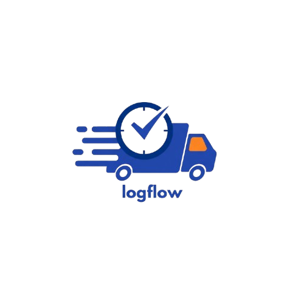

We bridge the gap between continents, ensuring your cargo moves smoothly across 3 major global markets.
Our most extensive network. From Lagos port to the hinterlands of the North, we provide 100% geographic coverage for interstate haulage and last-mile logistics.
Focusing on the major industrial belts, our US operations handle middle-mile transport for retail and manufacturing giants across 20 key states.
Currently expanding our British footprint. We are focusing on high-demand regions to provide the Logflow standard of excellence to UK retailers.
The latest strategic updates, technological milestones, and global expansion news from our headquarters.
We are proud to announce that Logflow has officially commenced Phase 1 of its European expansion, starting with seven key logistics hubs in the United Kingdom, including London, Greater Manchester, and Birmingham. This move is designed to bring our proprietary "Smart-Route" technology to British retailers who require high-precision last-mile delivery. By integrating local courier expertise with our global tracking nerve center, we are aiming to reduce delivery times across the UK by 22% within the first fiscal year. This expansion also marks the opening of our new regional headquarters in London, dedicated to supporting our growing European client base.
In a historic milestone for African logistics, Logflow has successfully completed the digital integration of its entire Nigerian fleet. Every vehicle operating across the 36 states of the Federation is now equipped with advanced IoT sensors and real-time GPS telemetry. This means our clients, whether shipping from Lagos to Maiduguri or Port Harcourt to Kano, now have 100% visibility into their cargo's journey. This integration significantly improves security, fuel efficiency, and route optimization. Beyond technology, this milestone represents our commitment to the Nigerian economy, providing reliable infrastructure that supports thousands of local businesses and ensures the seamless flow of essential goods across the country.
Logflow's North American division has reported a record-breaking quarter, successfully expanding its middle-mile haulage network to 20 key industrial states. Our operations now span from the tech corridors of California to the manufacturing heartlands of the Midwest. This growth is driven by our unique "Asset-Light" partnership model, which allows us to scale rapidly while maintaining the highest safety standards in the industry. By focusing on the critical link between regional warehouses and local distribution centers, Logflow is solving the most complex bottlenecks in the US supply chain. We are currently on track to hit 30 states by the end of 2026, supported by a new state-of-the-art dispatch center in Texas.